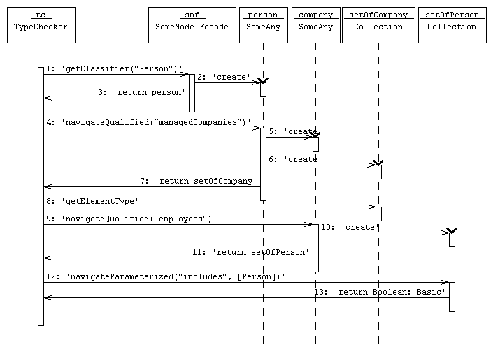
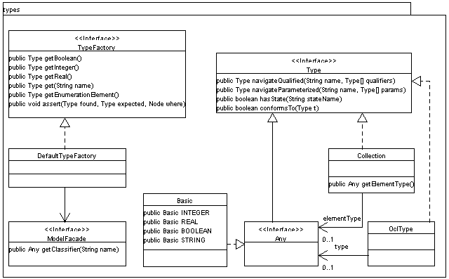

ModelFacade is the interface used by the
type checker to access model information.
The following sequence diagram gives an example of how the type checker uses
interfaces of this package to get the necessary model information to check the
constraint
context Person inv: managedCompanies.employees->includes(self).
SomeAny and SomeModelFacade stand for implementions of the respective interfaces.
setOfCompany and setOfPerson are instances of {@link
tudresden.ocl.check.types.Collection}.

An overview of the type interfaces is shown in the following diagram:

ReflectionFacade is an implementation of this interface that
queries compiled Java classes via reflection to get model information.
TestModelFacade in the subpackage testfacade
is a dummy implementation that is
used for testing and demonstration purposes. Other implementations are backed
by information from XMI files or Argo/UMLs repository. (The sourcecode of the
latter is part of Argo.)